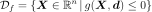
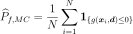
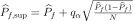
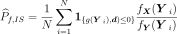
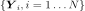
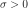

ProbabilitySimulationAlgorithm¶
-
class
ProbabilitySimulationAlgorithm(*args)¶ Iterative sampling methods.
Refer to Monte Carlo simulation, Importance Simulation, Latin Hypercube Simulation, Quasi Monte Carlo.
- Available constructor:
ProbabilitySimulationAlgorithm(event, experiment, verbose=True, convergenceStrategy=ot.Compact())
ProbabilitySimulationAlgorithm(event, verbose=True, convergenceStrategy=ot.Compact())
- Parameters
- event
Event The event we are computing the probability of, must be composite.
- experiment
WeightedExperiment Sequential experiment
- verbosebool, optional
If True, make the computation verbose.
- convergenceStrategy
HistoryStrategy, optional Storage strategy used to store the values of the probability estimator and its variance during the simulation algorithm.
- event
See also
Notes
Using the probability distribution of a random vector
 , we seek
to evaluate the following probability:
, we seek
to evaluate the following probability:
Here,
is a random vector,  a deterministic
vector,
a deterministic
vector,  the function known as limit state function
which enables the definition of the event
the function known as limit state function
which enables the definition of the event
If we have the set
 of
of
 independent samples of the random vector , we can
estimate
independent samples of the random vector , we can
estimate  as follows:
as follows:
where
 describes the indicator function equal to 1 if
describes the indicator function equal to 1 if
 and equal to 0 otherwise;
the idea here is in fact to estimate the required probability by the proportion
of cases, among the samples of , for which the event
and equal to 0 otherwise;
the idea here is in fact to estimate the required probability by the proportion
of cases, among the samples of , for which the event
 occurs.
occurs.By the law of large numbers, we know that this estimation converges to the required value
 as the sample size tends to infinity.
as the sample size tends to infinity.The Central Limit Theorem allows to build an asymptotic confidence interval using the normal limit distribution as follows:
![\lim_{N\rightarrow\infty}\Prob{P_f\in[\widehat{P}_{f,\inf},\widehat{P}_{f,\sup}]}=\alpha](../../_images/math/e8489bd647785763fba59b52b05120c6032bb7cc.svg)
with ,

and is the
is the  -quantile of the standard
normal distribution.
-quantile of the standard
normal distribution.
A ProbabilitySimulationAlgorithm object makes sense with the following sequential experiments:
LHSExperiment(for the non randomized version seeLHS)
The estimator built by Monte Carlo method is:
where
describes the indicator function equal to 1 if
and equal to 0 otherwise;
the idea here is in fact to estimate the required probability by the proportion
of cases, among the samples of , for which the event
occurs.By the law of large numbers, we know that this estimation converges to the required value
as the sample size tends to infinity.The Central Limit Theorem allows to build an asymptotic confidence interval using the normal limit distribution as follows:
with , and
is the -quantile of the standard
normal distribution.The estimator built by Importance Sampling method is:

where:
- is the total number of computations,
the random vectors

are independent, identically distributed and following the probability density function .
.
Examples
Estimate a probability by Monte Carlo
>>> import openturns as ot >>> ot.RandomGenerator.SetSeed(0) >>> myFunction = ot.SymbolicFunction(['E', 'F', 'L', 'I'], ['-F*L^3/(3*E*I)']) >>> myDistribution = ot.Normal([50.0, 1.0, 10.0, 5.0], [1.0]*4, ot.IdentityMatrix(4)) >>> # We create a 'usual' RandomVector from the Distribution >>> vect = ot.RandomVector(myDistribution) >>> # We create a composite random vector >>> output = ot.CompositeRandomVector(myFunction, vect) >>> # We create an Event from this RandomVector >>> myEvent = ot.Event(output, ot.Less(), -3.0) >>> # We create a Monte Carlo algorithm >>> experiment = ot.MonteCarloExperiment() >>> myAlgo = ot.ProbabilitySimulationAlgorithm(myEvent, experiment) >>> myAlgo.setMaximumOuterSampling(150) >>> myAlgo.setBlockSize(4) >>> myAlgo.setMaximumCoefficientOfVariation(0.1) >>> # Perform the simulation >>> myAlgo.run() >>> print('Probability estimate=%.6f' % myAlgo.getResult().getProbabilityEstimate()) Probability estimate=0.140000
Estimate a probability by Importance Sampling
>>> ot.RandomGenerator.SetSeed(0) >>> myImportance = ot.Normal([49.969, 1.84194, 10.4454, 4.66776], [1.0]*4, ot.IdentityMatrix(4)) >>> experiment = ot.ImportanceSamplingExperiment(myImportance) >>> myAlgo = ot.ProbabilitySimulationAlgorithm(myEvent, experiment) >>> myAlgo.setMaximumOuterSampling(150) >>> myAlgo.setBlockSize(4) >>> myAlgo.setMaximumCoefficientOfVariation(0.1) >>> # Perform the simulation >>> myAlgo.run() >>> print('Probability estimate=%.6f' % myAlgo.getResult().getProbabilityEstimate()) Probability estimate=0.153314
Estimate a probability by Quasi Monte Carlo
>>> ot.RandomGenerator.SetSeed(0) >>> experiment = ot.LowDiscrepancyExperiment() >>> myAlgo = ot.ProbabilitySimulationAlgorithm(myEvent, experiment) >>> myAlgo.setMaximumOuterSampling(150) >>> myAlgo.setBlockSize(4) >>> myAlgo.setMaximumCoefficientOfVariation(0.1) >>> # Perform the simulation >>> myAlgo.run() >>> print('Probability estimate=%.6f' % myAlgo.getResult().getProbabilityEstimate()) Probability estimate=0.141667
Estimate a probability by Randomized Quasi Monte Carlo
>>> ot.RandomGenerator.SetSeed(0) >>> experiment = ot.LowDiscrepancyExperiment() >>> experiment.setRandomize(True) >>> myAlgo = ot.ProbabilitySimulationAlgorithm(myEvent, experiment) >>> myAlgo.setMaximumOuterSampling(150) >>> myAlgo.setBlockSize(4) >>> myAlgo.setMaximumCoefficientOfVariation(0.1) >>> # Perform the simulation >>> myAlgo.run() >>> print('Probability estimate=%.6f' % myAlgo.getResult().getProbabilityEstimate()) Probability estimate=0.160000
Estimate a probability by Randomized LHS
>>> ot.RandomGenerator.SetSeed(0) >>> experiment = ot.LHSExperiment() >>> experiment.setAlwaysShuffle(True) >>> myAlgo = ot.ProbabilitySimulationAlgorithm(myEvent, experiment) >>> myAlgo.setMaximumOuterSampling(150) >>> myAlgo.setBlockSize(4) >>> myAlgo.setMaximumCoefficientOfVariation(0.1) >>> # Perform the simulation >>> myAlgo.run() >>> print('Probability estimate=%.6f' % myAlgo.getResult().getProbabilityEstimate()) Probability estimate=0.140000
Methods
drawProbabilityConvergence(self, \*args)Draw the probability convergence at a given level.
getBlockSize(self)Accessor to the block size.
getClassName(self)Accessor to the object’s name.
getConvergenceStrategy(self)Accessor to the convergence strategy.
getEvent(self)Accessor to the event.
getExperiment(self)Accessor to the experiment.
getId(self)Accessor to the object’s id.
Accessor to the maximum coefficient of variation.
getMaximumOuterSampling(self)Accessor to the maximum sample size.
Accessor to the maximum standard deviation.
getName(self)Accessor to the object’s name.
getResult(self)Accessor to the results.
getShadowedId(self)Accessor to the object’s shadowed id.
getVerbose(self)Accessor to verbosity.
getVisibility(self)Accessor to the object’s visibility state.
hasName(self)Test if the object is named.
hasVisibleName(self)Test if the object has a distinguishable name.
run(self)Launch simulation.
setBlockSize(self, blockSize)Accessor to the block size.
setConvergenceStrategy(self, convergenceStrategy)Accessor to the convergence strategy.
setExperiment(self, experiment)Accessor to the experiment.
setMaximumCoefficientOfVariation(self, …)Accessor to the maximum coefficient of variation.
setMaximumOuterSampling(self, …)Accessor to the maximum sample size.
setMaximumStandardDeviation(self, …)Accessor to the maximum standard deviation.
setName(self, name)Accessor to the object’s name.
setProgressCallback(self, \*args)Set up a progress callback.
setShadowedId(self, id)Accessor to the object’s shadowed id.
setStopCallback(self, \*args)Set up a stop callback.
setVerbose(self, verbose)Accessor to verbosity.
setVisibility(self, visible)Accessor to the object’s visibility state.
-
__init__(self, *args)¶ Initialize self. See help(type(self)) for accurate signature.
-
drawProbabilityConvergence(self, *args)¶ Draw the probability convergence at a given level.
- Parameters
- levelfloat, optional
The probability convergence is drawn at this given confidence length level. By default level is 0.95.
- Returns
- grapha
Graph probability convergence graph
- grapha
-
getBlockSize(self)¶ Accessor to the block size.
- Returns
- blockSizeint
Number of terms in the probability simulation estimator grouped together. It is set by default to 1.
-
getClassName(self)¶ Accessor to the object’s name.
- Returns
- class_namestr
The object class name (object.__class__.__name__).
-
getConvergenceStrategy(self)¶ Accessor to the convergence strategy.
- Returns
- storage_strategy
HistoryStrategy Storage strategy used to store the values of the probability estimator and its variance during the simulation algorithm.
- storage_strategy
-
getExperiment(self)¶ Accessor to the experiment.
- Returns
- experiment
WeightedExperiment The experiment that is sampled at each iteration.
- experiment
-
getId(self)¶ Accessor to the object’s id.
- Returns
- idint
Internal unique identifier.
-
getMaximumCoefficientOfVariation(self)¶ Accessor to the maximum coefficient of variation.
- Returns
- coefficientfloat
Maximum coefficient of variation of the simulated sample.
-
getMaximumOuterSampling(self)¶ Accessor to the maximum sample size.
- Returns
- outerSamplingint
Maximum number of groups of terms in the probability simulation estimator.
-
getMaximumStandardDeviation(self)¶ Accessor to the maximum standard deviation.
- Returns
- sigmafloat,

Maximum standard deviation of the estimator.
- sigmafloat,
-
getName(self)¶ Accessor to the object’s name.
- Returns
- namestr
The name of the object.
-
getResult(self)¶ Accessor to the results.
- Returns
- results
SimulationResult Structure containing all the results obtained after simulation and created by the method
run().
- results
-
getShadowedId(self)¶ Accessor to the object’s shadowed id.
- Returns
- idint
Internal unique identifier.
-
getVerbose(self)¶ Accessor to verbosity.
- Returns
- verbosity_enabledbool
If True, the computation is verbose. By default it is verbose.
-
getVisibility(self)¶ Accessor to the object’s visibility state.
- Returns
- visiblebool
Visibility flag.
-
hasName(self)¶ Test if the object is named.
- Returns
- hasNamebool
True if the name is not empty.
-
hasVisibleName(self)¶ Test if the object has a distinguishable name.
- Returns
- hasVisibleNamebool
True if the name is not empty and not the default one.
-
run(self)¶ Launch simulation.
Notes
It launches the simulation and creates a
SimulationResult, structure containing all the results obtained after simulation. It computes the probability of occurence of the given event by computing the empirical mean of a sample of size at most outerSampling * blockSize, this sample being built by blocks of size blockSize. It allows to use efficiently the distribution of the computation as well as it allows to deal with a sample size by a combination of blockSize and
outerSampling.
by a combination of blockSize and
outerSampling.
-
setBlockSize(self, blockSize)¶ Accessor to the block size.
- Parameters
- blockSizeint,

Number of terms in the probability simulation estimator grouped together. It is set by default to 1.
- blockSizeint,
Notes
For Monte Carlo, LHS and Importance Sampling methods, this allows to save space while allowing multithreading, when available we recommend to use the number of available CPUs; for the Directional Sampling, we recommend to set it to 1.
-
setConvergenceStrategy(self, convergenceStrategy)¶ Accessor to the convergence strategy.
- Parameters
- storage_strategy
HistoryStrategy Storage strategy used to store the values of the probability estimator and its variance during the simulation algorithm.
- storage_strategy
-
setExperiment(self, experiment)¶ Accessor to the experiment.
- Parameters
- experiment
WeightedExperiment The experiment that is sampled at each iteration.
- experiment
-
setMaximumCoefficientOfVariation(self, maximumCoefficientOfVariation)¶ Accessor to the maximum coefficient of variation.
- Parameters
- coefficientfloat
Maximum coefficient of variation of the simulated sample.
-
setMaximumOuterSampling(self, maximumOuterSampling)¶ Accessor to the maximum sample size.
- Parameters
- outerSamplingint
Maximum number of groups of terms in the probability simulation estimator.
-
setMaximumStandardDeviation(self, maximumStandardDeviation)¶ Accessor to the maximum standard deviation.
- Parameters
- sigmafloat,
Maximum standard deviation of the estimator.
-
setName(self, name)¶ Accessor to the object’s name.
- Parameters
- namestr
The name of the object.
-
setProgressCallback(self, *args)¶ Set up a progress callback.
Can be used to programmatically report the progress of a simulation.
- Parameters
- callbackcallable
Takes a float as argument as percentage of progress.
Examples
>>> import sys >>> import openturns as ot >>> experiment = ot.MonteCarloExperiment() >>> X = ot.RandomVector(ot.Normal()) >>> Y = ot.CompositeRandomVector(ot.SymbolicFunction(['X'], ['1.1*X']), X) >>> event = ot.Event(Y, ot.Less(), -2.0) >>> algo = ot.ProbabilitySimulationAlgorithm(event, experiment) >>> algo.setMaximumOuterSampling(100) >>> algo.setMaximumCoefficientOfVariation(-1.0) >>> def report_progress(progress): ... sys.stderr.write('-- progress=' + str(progress) + '%\n') >>> algo.setProgressCallback(report_progress) >>> algo.run()
-
setShadowedId(self, id)¶ Accessor to the object’s shadowed id.
- Parameters
- idint
Internal unique identifier.
-
setStopCallback(self, *args)¶ Set up a stop callback.
Can be used to programmatically stop a simulation.
- Parameters
- callbackcallable
Returns an int deciding whether to stop or continue.
Examples
Stop a Monte Carlo simulation algorithm using a time limit
>>> import openturns as ot >>> experiment = ot.MonteCarloExperiment() >>> X = ot.RandomVector(ot.Normal()) >>> Y = ot.CompositeRandomVector(ot.SymbolicFunction(['X'], ['1.1*X']), X) >>> event = ot.Event(Y, ot.Less(), -2.0) >>> algo = ot.ProbabilitySimulationAlgorithm(event, experiment) >>> algo.setMaximumOuterSampling(10000000) >>> algo.setMaximumCoefficientOfVariation(-1.0) >>> timer = ot.TimerCallback(0.1) >>> algo.setStopCallback(timer) >>> algo.run()
-
setVerbose(self, verbose)¶ Accessor to verbosity.
- Parameters
- verbosity_enabledbool
If True, make the computation verbose. By default it is verbose.
-
setVisibility(self, visible)¶ Accessor to the object’s visibility state.
- Parameters
- visiblebool
Visibility flag.